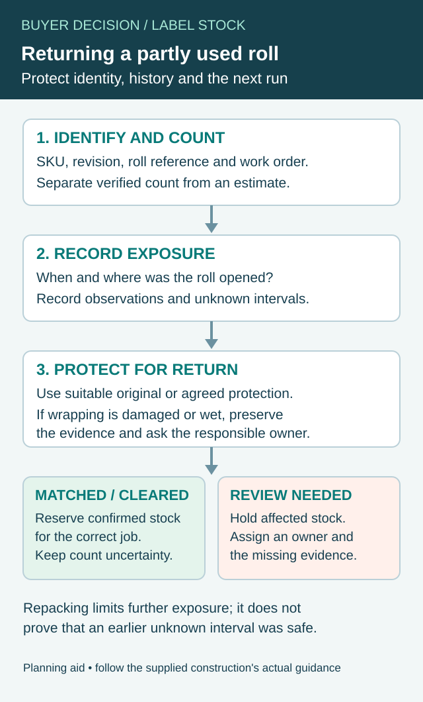

A carton arrives this month, but the stock inside may have an earlier manufacturing history. A later printing, delivery or opening date should not silently become the start date for every supplier's shelf-life statement.
Record the date basis and the conditions attached to the actual supplied construction before releasing older rolls. Keep material age, storage exposure and artwork validity as separate checks. None can be inferred from a fresh shipping label alone.

AI-generated illustration retained on this article only. Fictional packaging, equipment and readouts; no depicted date, setting or result is a production recommendation.
Ask what the shelf-life clock actually means
Obtain the guidance for the supplied finished-label construction, including any relevant material reference. Record its stated origin date, period, required conditions and limits. If the label supplier and raw-material statement refer to different stages, ask the supplier to reconcile them for the delivered product.
| Date or status | Meaning to establish |
|---|---|
| Material production reference | Supplier's identified lot/date and whether its guidance uses that origin |
| Printing/conversion | When the finished labels were produced and under which construction reference |
| Receipt | When your operation received the stock; not an assumed new shelf-life origin |
| Opening or transfer | When protection or storage environment changed |
| Supplier best-use statement | Applicable date basis, conditions and any job-specific limitation |
| Artwork eligibility | Whether the file revision is still authorized for the intended product |
The record should show unknowns. Do not calculate a new expiry from a receiving date when the actual date basis has not been confirmed. Do not extend a supplier period merely because a roll still looks attractive.
Review exposure as well as age
Keep handling and environmental history with the lot. A documented period under the specified conditions and a period with unknown heat or moisture exposure are different evidence states. Mark the uncertainty and ask the relevant supplier/quality owner what assessment is appropriate.
HERMA's storage guidance emphasizes protected storage, suitable climate, acclimatization and shelf-life consideration for its materials. Its conditions are not a finished-label warranty for a different construction. Follow the guidance actually supplied for your stock rather than copying a generic warehouse temperature from an illustration.
Decide whether stock is eligible, held or obsolete
Review physical condition, applicable date guidance and current artwork authorization separately. A perfect-looking roll can contain withdrawn copy. A current artwork revision can be printed on stock with unresolved storage history. Either issue may require a hold, but they need different corrective decisions.
If use after a stated date is proposed, obtain an explicit assessment from the responsible supplier and quality team. A brief dispensing demonstration does not automatically establish the full intended service period on the package. Record what was checked and what remains uncertain before a limited release is considered.
Use adhesive-edge ooze investigation for tacky edges, telescoped-roll receiving checks for displaced winding and multi-SKU inventory planning for commercial obsolescence.
Short answer
Store printed label rolls upright or in their intended supported orientation, inside original wrapping and cartons, away from sunlight and heat, under the material supplier's specified temperature and humidity. Rotate inventory by artwork revision and best-use date, not only by arrival date.
Most label storage problems look like printing problems when they reach the line. The liner curls, rolls block, adhesive edges ooze or labels dispense inconsistently. By then the carton that sat beside a sunny warehouse door for three months is no longer part of the conversation.
What storage can change
| Condition | Possible effect | Line symptom |
|---|---|---|
| High heat | Adhesive flow, blocking or reduced stability | Sticky edges and difficult unwinding |
| High humidity | Paper and liner absorb moisture | Curl, registration or dispensing variation |
| Very dry air | Moisture loss and static | Feeding, dust attraction or brittle paper |
| Sunlight/UV | Color and material aging | Fading or changed adhesive response |
| Crushing | Roll edges and cores deform | Web tracking and tension problems |
A composite co-packer problem
This is a composite planning example. A beverage co-packer reports that the first half of a label order runs perfectly while older reserve rolls break at the die-cut edge and feed unevenly. Both rolls carry the same SKU and printer reference.
In this hypothetical investigation, die depth is considered because that is a believable production cause. The reserve cartons, however, were opened the previous season and stored above a warm filling room. The newer rolls stayed wrapped in a controlled cage. The label specification did not change; its history did.
Keep rolls wrapped until they are needed
The supplied product and finished-roll guidance should identify the applicable storage conditions and limitations. Do not substitute a generic climate example for the actual construction instructions.
Inventory control needs artwork control
Adhesive age is only one reason to rotate stock. Labels also expire commercially when an ingredient line, barcode, distributor address or claim changes. A warehouse can keep rolls in perfect physical condition and still ship obsolete copy.
- Print SKU and artwork revision on the carton label.
- Record received date and supplier best-use date.
- Separate approved stock from quarantine and obsolete versions.
- Use first-expire-first-out when the material date is the limiting factor.
- Destroy or clearly block withdrawn revisions before a rushed production run.
Acclimate before opening
Moving a cold roll into a warm humid room can create condensation. Moving a damp paper roll into a dry production room can change curl as it equilibrates. Bring sealed cartons into the production environment with enough time to acclimate, then open only what the line needs.
| Before production | Check |
|---|---|
| Carton | SKU, revision, damage and storage status |
| Roll | Core roundness, edge damage, telescoping and blocking |
| Labels | Color, curl, liner cuts, adhesive ooze and splice marks |
| Applicator | Core, unwind direction, roll diameter and sensor setup |
| Trial | Dispensing, placement and adhesion at the intervals agreed for the intended construction and use |
When smaller orders win
High-volume label pricing rewards longer runs, but fast-changing SKUs may justify smaller releases. Compare setup savings with storage space, material shelf life, forecast uncertainty and artwork obsolescence. A blanket order with scheduled releases can sometimes preserve purchasing leverage while reducing physical inventory risk.
Warehouse checklist
- Record temperature and humidity in the label storage zone.
- Keep cartons away from exterior walls, heaters and sunlight.
- Leave rolls wrapped and supported to prevent edge damage.
- Scan SKU, revision, received date and best-use date.
- Quarantine damaged, wet or obsolete rolls immediately.
- Acclimate sealed cartons before production.
- Retest adhesion and dispensing when storage history is uncertain.
For reducing obsolete versions, continue with Multi-SKU Short-Run Label Printing and the Label Roll Direction Guide.
Send the roll return details
Include the roll identity, construction reference, artwork revision, verified remaining quantity or estimate, wrapping condition and any known exposure history. Mark unknowns explicitly; the responsible owner must decide any hold or release.
Prepare a label specification inquiry. The contact form opens an email draft; use the listed email or WhatsApp route for attachments. Available services, pricing and timing require confirmation.
Returning a partly used roll to stock
A roll can leave the line with plenty of labels left and still be difficult to reuse safely. The warehouse needs to know which job it belongs to, what protection was opened, and what happened while the roll was away. A fresh carton label alone cannot reconstruct that history.


Before the line removes the roll, identify the product, component and approved artwork revision against the original order or roll record. Record the supplier's roll or lot reference and the work order it served. If the identity cannot be reconciled, place the roll on hold for the responsible stock or quality owner; do not invent a new lot identity from the product artwork.
Count the remaining labels using the method agreed for the operation. A roll diameter is not an exact quantity. If only an estimate is available, mark it as an estimate and keep it separate from a verified piece count. Note any setup consumption or missing-label gaps where they are known, without deducting the same pieces twice.
| Return field | Record before the roll leaves the line | What remains open |
|---|---|---|
| Identity | SKU, component, artwork revision, supplier roll or lot reference | Any field that cannot be matched to the controlled job |
| Remaining stock | Verified count or clearly identified estimate, plus known gaps | The count method and uncertainty |
| Exposure | When and where protection was opened; any observed moisture, damage or contamination | Unobserved periods and disputed observations |
| Protection | Original protective wrap and carton where intact; any replacement packaging | Whether replacement protection satisfies the supplier's requirements |
| Authorization | Current artwork status, storage guidance and named reviewer | Disposition and restrictions on further use |
Repack first, but do not turn repacking into approval
HERMA's storage and processing guidance recommends keeping its labels in their original packaging until use and protecting them from climatic changes and pressure. Ask the actual finished-label supplier what protection is appropriate for the supplied roll and how to repackage it after opening. Keep the manufacturer's orientation, core and edge protection where they remain suitable. Do not force a damaged core or loose edge into a package merely to close a return transaction.
If the original wrap is wet, torn or visibly contaminated, preserve the condition for assessment and ask the responsible team what replacement protection and segregation are appropriate. Rewrapping can reduce further exposure; it does not erase an earlier unknown interval. Record the return date and the person making the observation, without claiming that the condition proves a manufacturing cause.
Decide what the next run can use
At the next work order, compare the returned roll's identity with the authorized component and revision. Check the applicable supplier storage guidance, protection history and any recorded condition concerns. A roll with current artwork but an unknown exposure history needs a different review from a well-protected roll carrying obsolete copy. Where a hold exists, the designated owner must decide what evidence or assessment is needed before use.
When only a partial quantity is confirmed, reserve that amount against the intended run and separately record the remaining requirement. The stock runout guide explains the allocation decision; the co-packer handoff guide separates receipt from authorization to use the material. A dispensing check may answer one line-handling question, but it does not by itself establish suitability for every later exposure or replace the supplier's construction-specific guidance.
The trade-off is a few minutes of identification, protection and review against the cost of replacing usable stock or investigating an untraceable roll later. Ask the line owner, stock owner and supplier who records the return and who can release an exception. The checklist is an editorial planning aid, not a universal storage period, guarantee or test result.